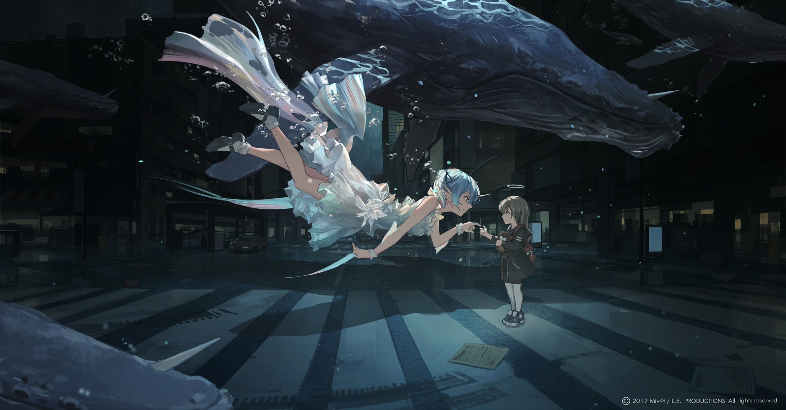

18年已过多半，我依旧还是那句，真的好久好久没有更新博客了。记得18年初的时候，曾计划着这一年游遍大江南北， 和朋友排好的日程，满怀期待的收拾行囊，来一场说走就走的旅行的时候，我发现自己有了小宝宝，前期的孕吐，哪儿都去不了。 计划赶不上变化这一句还是印记到我身上，我看着朋友圈，朋友一个人潇洒自在的爬华山，内心还是有点缺憾。 万事不能全，作为一个准妈妈，心里还是蛮激动的，尤其是我坐在椅子上，他咕噜咕噜从我肚子上游来游去的时候， 隔着衣服都能看见的弧线，嘴角还是不由得微笑起来。一面嗔怪他的调皮，一面又担心他的营养是否可以跟上。 当妈妈这个角色真是又幸福又焦虑，以前觉得爸妈恩赐的一切都是理所当然，习惯了衣来伸手饭来张口， 总是奢望自己得到的更多，可如今看来，当初的自己是多么浅薄与无知。
18年已过半，在这里，非常感谢一直陪伴我身边的王先森，因为孕激素的原因，总是会时不时无理取闹，动不动就哭鼻子， 连自己都觉得不可思议。每当这个时候，王先森总是笑着对着肚里的宝说，宝啊，你看看你妈妈，又在欺负爸爸，你踹她一脚。 宝宝似乎有心灵感应一样，接到爸爸的指示，用劲儿揣着我肚子，一拱一拱的。在公司吃不惯食堂的饭，感谢王先森每天精心 准备的午餐便当。结婚两年了，我们在一起八年了，时间眨眼而过，我依旧还是你内心想象力丰富的那个傻姑娘，感恩一切， 我的幸运男孩。
18年已过半，北漂的日子还在继续，觉得手头上的钱总是不够花。但是心态还好，每当周末，就宅在家里，和王先森琢磨美食， 这一年尝试了蒸馒头，蒸包子，做披萨，包饺子，包馄饨，清蒸鲈鱼，味道自我感觉还不错。生活就是这样，钱永远赚不够， 可是生活你可以过得足够精彩，期待我宝平安顺利出生。

上一篇: 《活着》书评 下一篇: 本地环境搭建php7